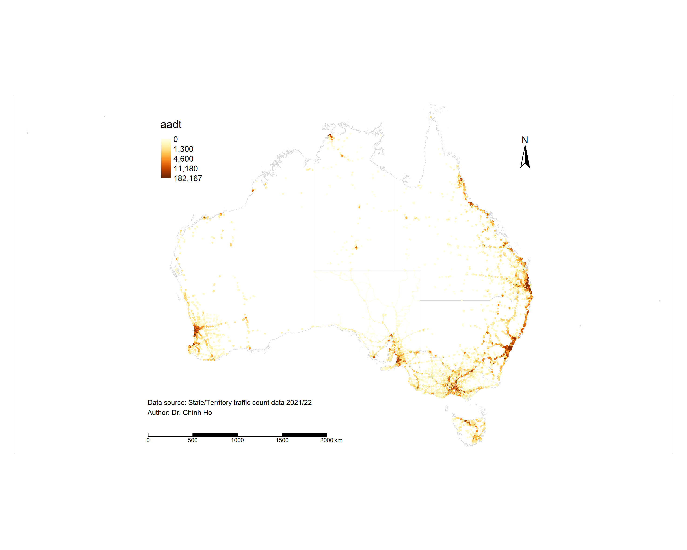

Projects
Dive into our world of data wizardry through a selection of our standout projects. Each example is a testament to how Enlightened Data’s expertise in analysis and modeling can illuminate the path to strategic decisions and impactful solutions.
Values of Road Safety
2017-11-01 to 2024-02-29 Last compiled: 2024-03-09
Client: Austroads.
Methodology:
- Data collection: Stated Preference Survey.
- Data analysis: Advanced Choice Modelling.
Partners: Deloitte Access Economics and Taverner Research.
Background
Have you ever pondered how the worth of road safety is gauged by economists, or in other words, how they determine the value of a human life in these analyses?
The Value of Statistical Life (VSL) is a fascinating
concept used to tackle these questions, especially when it comes to
making our roads safer. Instead of putting a price tag on life itself,
VSL estimates how much people are collectively willing to spend to
reduce the risk of fatal accidents. For instance, if a group is ready to
pay $50 each for a safety feature that lessens the chance
of a fatal car accident by 1 in 100,000, then the VSL is pegged at
$5 million ($50 x 100,000). This calculation
helps in assessing whether the cost of road safety measures, like new
traffic signals or stricter speed enforcement, is justified by the
benefits, namely saving lives and preventing injuries. It’s a way for
decision-makers to prioritise safety measures and make informed choices,
ensuring that investments in safety deliver the most bang for the
buck in protecting our communities.
How could modellers estimate the amount of money that people are collectively willing to spend to reduce road cashes and the chance of involving in a certain type of road crash such as fatal or major injury that requires hospitalisation? Economists term these concepts a Willingness To Pay (WTP) value and a crash probability, respectively. These are the two vital inputs for the estimation of the VSL.
What do we need the estimate these values? Two things, really. High quality data and good behavioural models.
Collecting data
Collecting high quality data is time-consuming and this is the reason why this project takes more than 5 years from inception (2017) to completion (2024). Obviously, the Covid-19 pandemic severely delayed and disrupted the study. Not withstanding this, multiple waves of data collection, from pilots in selected states to a national studies, took a lot of time. Multiple survey administration methods, including online self-guided to online-guided and face2face interviews were tested to select the most appropriate method that delivers high quality data within the budget and timeline.
Survey administration methods
This study marks the first attempt to use a WTP (Willingness to Pay) approach to simultaneously estimate national values for time, reliability, and safety in road travel. As these values are being determined for the first time, significant time and effort were invested in the design, testing, and review phases before launching a comprehensive national survey.
The survey comprises three phases: design, pilots, and national survey (wave 1 and wave 2) with cognitive interviews and feedback between phases to improve the survey instruments. Overall, nothing beats face2face interviews, which had to be replaced with online-guided interviews in Wave 2 of the national survey due to physical distancing measures imposed by Covid-19.
The Stated Choice Experiment
Centred to this national study of WTP is a SP experiment that face the participants five sets of route choices, each choice consisted of two options. The two options had varying estimates of safety, cost, and travel time, where travel time was given as a range to reflect differing reliabilities (see Figure below).

The attribute levels (cost, time, reliability, and safety) of the choice experiments were chosen using Bayesian efficient designs. These optimise the attribute levels based on each respondent’s reported trip details obtained from the background questions that preceed the SP experiment. The aim of the Bayesian efficient designs is to minimise the standard deviations of errors in the model coefficient estimates.
Survey sampling
The survey used a stratification sampling with quota to obtain enough sampels for the requirement of separate WTP values for different travel purposes. Samples are proportionate to the population of each State/Territory. Quotas were also employed for jurisdictions, drivers and passengers, and metropolitan and regional locations to ensure the survey results accurately represented nationwide averages.
In the field work, recruitment took place in both urban and regional settings so that travellers outside major (capital) cities would also be included. The split of the samples (i.e., respondents) between urban vs. rural location was matched with corresponding statistics derived from the ABS 2016 Census Journey to Work (JTW) to obtain an expansion factor (i.e., weight) for each observation. In the absence of reliable statistics on urban/rural split for business and non-work trip purpose, the matching process used statistics for the Census JTW data for all trip purposes. The WTP values estimated from the model were then aggregated using the expansion factors to give weighted average values that could be used consistently for all travellers in all parts of Australia.
Final sample size
The National Survey captured a large sample of respondents and provided enough variation to ensure reliable and statistically significant results. However, the sample for the National Survey had approximately 650 fewer participants than initially planned, as some segments such as business travel and passenger trips in regional areas were extremely difficult to find post Covid-19. The figure below shows the shortfall of the final sample vs. targeted number.

Thus, an effort was made to use the pilot sample as much as possible. This was to bring the total sample closer to the target number. To make up for the shortfall, the 289 face-to-face interviews from the pilot phases were included and pooled with the results from Wave 1 for model development and estimation.
Collecting crash probability data
The crash probability, measuring the risk of exposing to road crashes is needed to estimate the WTP for reducing the number of crashes by one, for each severity class. Five severity classifications were represented in the survey. They correspond with fatal, incapacitating, major, minor injury and property damage only. Comparing to the classifications used by Australian jurisdictions, the study introduced the incapacitating injury which was considered necessary because the range of severities for hospitalised injuries is very large, ranging from an overnight stay to life-long incapacity.
The survey instrument presented the numbers of crashes in each severity category along the route of the trip over a period of a year. If the modelling was undertaken using SP data alone, the WTP value obtained would be WTP per trip for a reduction in the number of crashes, in a given severity category by one per year. This is termed the subjective value of crash risk reduction (SVCR).
For a given crash severity, the Value of Risk Reduction (VRR) is obtained by multiplying the SVCR by the level of crash exposure (number of opportunities for a crash) in a year. The exposure measure for each trip per annum was taken as the distance-weighted average annual daily traffic (AADT) level times 365 along the route of the trip. As the level of crash exposure varies between trips, the conversion was undertaken at the individual trip level. The number of crashes in each survey response was divided by the distance-weighted AADT times 365 for the trip to convert it to the annual probability of a crash occurring. The WTP value estimated from data expressed in crash probabilities is then the required VRR.
Transport authorities from various states and territories provided AADT data, which was standardised and indexed by year. Transport authorities in Australia estimate the AADT using traffic count data obtained from counters placed at various points/stations across the road networks. The location of these counters, and hence data coverage of the AADT, is shown in the Figure below.

Survey respondents were asked to provide the suburb of origin and destination of their trips, allowing for an optimal route (shortest time) to be determined through Google Maps. There were 3,885 unique routes identified for all origin-destination pairs, across all surveyed people, excluding intra-zonal trips. The reported trips span a wide geographical area of Australia and spread between urban and regional areas. AADTs for segments along the route for each trip were estimated for all identified routes across the entire survey sample. Since the AADT varies over the length of the route for each trip, the distance-weighted average was taken after snapping the traffic count data to each route and split it up to segments. The Figure below shows an example route between Bankstown and Mount Druitt in Sydney which went through a few traffic counters that provide the AADT data.